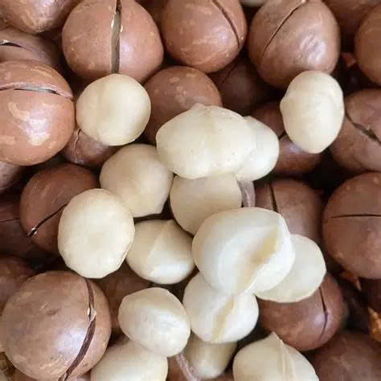
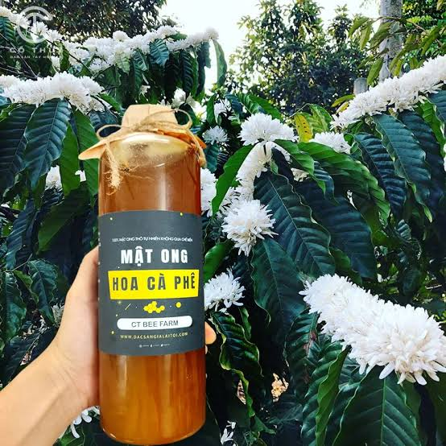
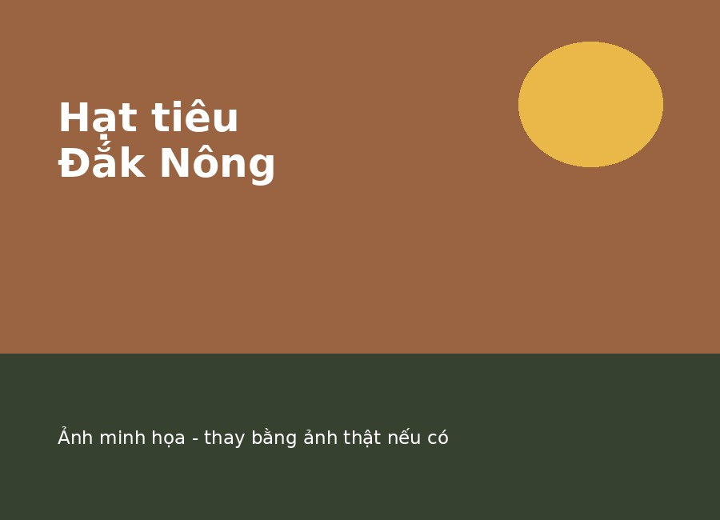
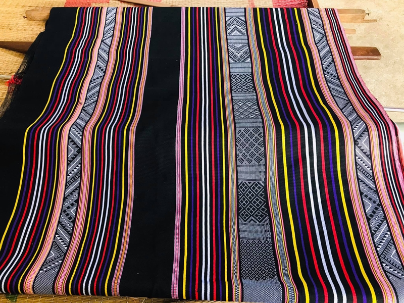

Nông sản khô & hạt
Cà phê Buôn Ma Thuột
Cà phê Robusta nguyên chất, rang mộc theo phương pháp truyền thống, hương thơm đậm đà đặc trưng của thủ phủ cà phê Việt Nam.
85.000đ / 500g
Xem chi tiếtTổng hợp các sản phẩm nông sản và thủ công đặc trưng của vùng đất đỏ bazan - từ cà phê, mật ong rừng, mắc ca, tiêu, bơ sáp cho đến thổ cẩm truyền thống. Mỗi sản phẩm đều có nguồn gốc rõ ràng, được chọn lọc kỹ càng từ các nông hộ và làng nghề địa phương.
Nông sản khô & hạt
Cà phê Robusta nguyên chất, rang mộc theo phương pháp truyền thống, hương thơm đậm đà đặc trưng của thủ phủ cà phê Việt Nam.
85.000đ / 500g
Xem chi tiết
Nông sản khô & hạt
Hạt mắc ca sấy khô, vỏ mỏng dễ tách, nhân béo bùi, thu hoạch từ các nông trại tại Đắk Lắk và Lâm Đồng.
220.000đ / kg
Xem chi tiết
Sản phẩm từ mật & tự nhiên
Mật ong nguyên chất khai thác từ rừng khộp Tây Nguyên, không pha tạp, giữ trọn hương vị hoa rừng tự nhiên.
180.000đ / chai 500ml
Xem chi tiết
Trái cây & nông sản tươi/sấy
Bơ sáp thịt vàng, dẻo mịn, béo ngậy, trồng theo hướng hữu cơ trên vùng đất đỏ bazan Đắk Lắk.
65.000đ / kg
Xem chi tiết
Gia vị & thực phẩm chế biến
Hạt tiêu đen chắc hạt, cay nồng đặc trưng, canh tác tại vùng chuyên canh tiêu nổi tiếng Đắk Nông.
120.000đ / 500g
Xem chi tiết
Thủ công mỹ nghệ & lưu niệm
Vải thổ cẩm dệt thủ công bởi nghệ nhân người Ê Đê, hoa văn truyền thống, chất liệu bền đẹp.
350.000đ / tấm
Xem chi tiết